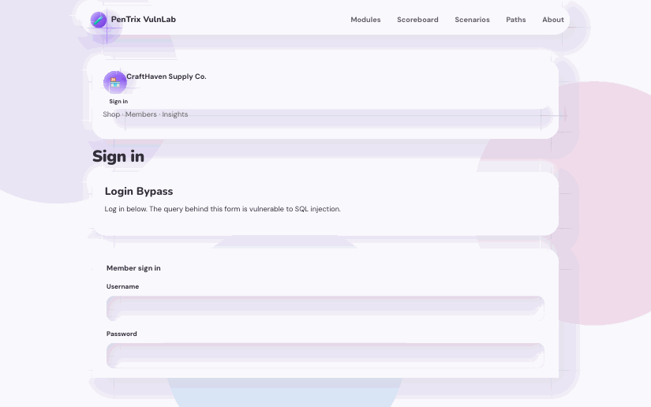
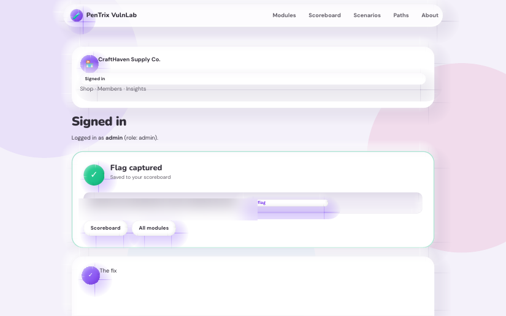
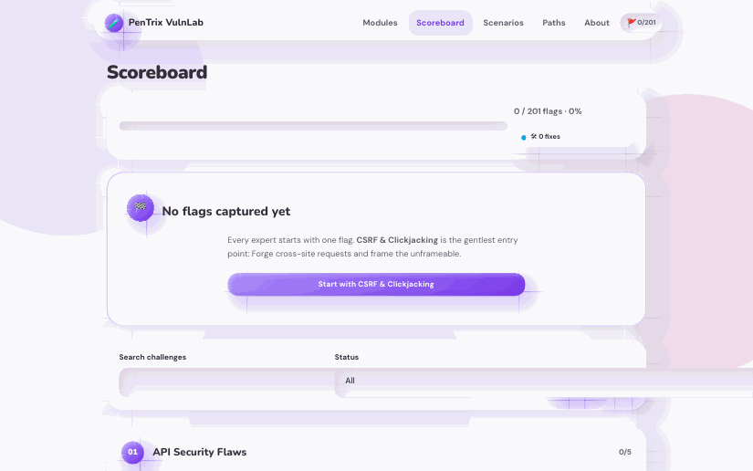

Guided
Start the Zero to Web Pentester path
Follow the guided career path inside the lab under /paths. Finish it and earn a verifiable PNG certificate.
No tools needed beyond a browser. You will open the lab, spot the bug, break a login with one line of typed SQL, and watch your scoreboard move to 1/201. Follow the steps in order.
Start the lab (docker compose up --build), then open http://localhost:3000 in your browser. You land on the home page: a grid of 29 modules, each one a small real website with a real bug. This is the map of all 201 challenges.

Click the SQL Injection module. You see its challenge list: several login and query challenges ranked from easy to hard. Each challenge has a hint ladder, so if you get stuck you can reveal hints one at a time instead of reading a full solution.

Click the Login Bypass challenge. You get a plain login form: username, password, and a Log in button. Here is the key idea: this login builds its SQL query by pasting your input straight into the query string. Whatever you type becomes part of the database query, and the database runs it.

In the username field, type exactly this (the space at the end is part of it):
admin' -- Type any password, for example x, then click Log in. What happens: the query the server builds becomes something like SELECT * FROM users WHERE username = 'admin' -- ' AND password = 'x'. Everything after -- is a comment, so the password check disappears and the query returns the admin row.
The page shows Flag captured with your flag, which looks like PENTRIX{...} followed by 32 random hex characters. Note: this flag was generated on your machine on first boot. Nobody else has it, so it cannot be copied from GitHub or from another student.

Open the Scoreboard from the nav. It reads 1/201: one challenge solved, 200 to go. Shortcuts earn nothing here (bare beacons and token replays get a 400), so that 1 only appears because you did a genuine exploit.

Simulated demo. No real system, every keystroke is scripted.
$ ./pentrix-demo --target login-bypass
[*] SIMULATION: no real system involved
POST /api/login -> 200 OK (18 ms)
[*] payload echo: admin' -- (the trailing space is part of it)
[+] typing username: admin' --
[+] typing password: ********
[*] built query: SELECT * FROM users WHERE username = 'admin' -- ' ...
[*] server: comment swallowed the password check
[+] server: 200 OK, welcome back, admin
[+] flag captured: PENTRIX{DEMO-SIMULATED-FLAG}
[*] scoreboard: 1/201
Follow the guided career path inside the lab under /paths. Finish it and earn a verifiable PNG certificate.
Chain bugs across modules in staged scenarios: Shop Takeover, API Heist, and Ghost in the CMS.
Learn how flags, certificates, and break-then-fix mode work before you go deeper.